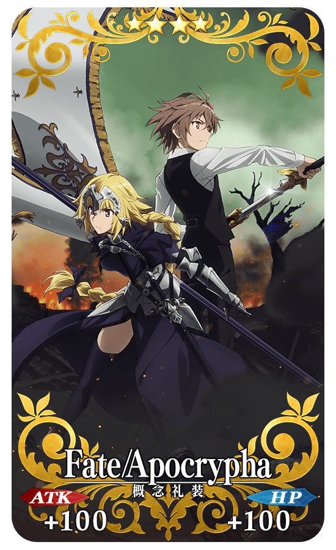
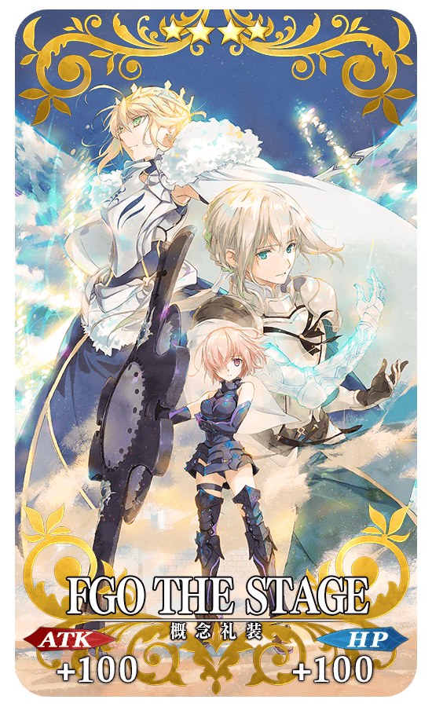

◆活動舉辦期間◆
2017年6月28日(三) 21:00～7月12日(三) 11:59
◆活動概要◆
為了記念TV動畫「Fate/Apocrypha」的放送及舞台劇「Fate/Grand Order THE STAGE –神聖圓桌領域卡美洛–」的公演實施期間限定關卡！
通過在迦勒底之門以期間限定出現的「Fate/Apocrypha放送記念關卡」及「FGO THE STAGE公演記念關卡」，取得各關卡限定的概念禮裝吧！
※請注意「Fate/Apocrypha放送記念關卡」及「FGO THE STAGE公演記念關卡」並無劇本。
◆關卡開放條件◆
「Fate/Apocrypha放送記念關卡」
全部的Master皆能參加
「FGO THE STAGE公演記念關卡」
只限通過「特異點F 炎上汙染都市 冬木」的Master才能參加
◆活動関連情報◆
「Fate/Apocrypha」7/1放送開始
誰都沒看過的「聖杯大戰」就此開幕―
【「Fate/Apocrypha」概要】
・TOKYO MX・BS11・群馬テレビ・とちぎテレビ:自7月1日每週六23:00
・MBS:自7月4日每週二26:30
・Netflix:自7月3日每週一獨家播送
※開始日・時間可能會因調度關係有所變更的情況。請預先理解。
「Fate/Grand Order THE STAGE –神聖圓桌領域卡美洛–」今夏＆今秋公演決定！
「第六特異點 神聖圓桌領域 卡美洛」的物語舞台化！
【「Fate/Grand Order THE STAGE –神聖圓桌領域卡美洛-」概要】
■公演日
＜夏公演＞2017年7月14日(五)～7月17日(一・祝)
＜秋公演＞2017年9月29日(五)～10月8日(日)
■劇場:Zeppブルーシアター六本木
■官方網站: http://stage.fate-go.jp/
■官方推特:@fgothestage
◆「Fate/Apocrypha放送記念關卡」限定概念禮裝◆
|  |
★★★★SR |
◆「FGO THE STAGE公演記念關卡」限定概念禮裝◆
|  |
★★★★SR |